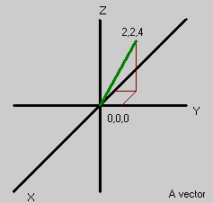
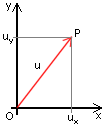
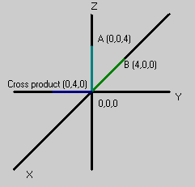

Vector
In order to represent physical quantities such as position and momentum in more than one dimension, we must describe them in a way to represent these properties. This is called a vector.
A Simple Illustration
To show what is a vector is, it is simplest to show examples of quantities that are not vectors.
- The number of gallons of gasoline in the fuel tank of your car is a quantity that can be described by a single number; it makes no sense to talk about a "direction" associated with the amount of gasoline in a tank.
- temperature
- your mass
- population of a country
Such quantities, which can be specified by giving a single number (in appropriate units), are called scalars. When dealing with vectors, numbers are usually called scalars.
Introducing the Vector
Since familiar examples are easiest to understand, we will use one to describe a vector: velocity.
Velocity can be described with both a speed and a direction. If we say that a car is going 70 km/hour, we have not completely described its motion because we have not specified the direction that it is going. However, we could describe:
- the magnitude of the velocity (70km/hour)
- a compass heading to specify the direction (say 30 degrees from North)
- a number giving the vertical angle with respect to the Earth's surface (say 10 degrees)
The combination of these quantities define a vector for the car. Remember, a vector requires more than one quantity to specify it, but it may have more.
How does one Express a Vector?
Vectors are represented by a single symbol:
- In longhand, this is underlined: v
- In print bold: v
- In coding, it's up to the coder to remember which is what type.

Vectors in UnrealScript always consist of three components, but in general a vector can also have two, four or even more components. Don't get confused by some of the pictures here, it's just easier to draw 2d vectors.
Coordinate Representation
On a two-dimensional plane, any point (x,y) is a vector. Graphically, we often represent such a vector by drawing an arrow from the origin to the point, with the tip of the arrow resting at the point.
The situation for three-dimensional vectors is similar, with an ordered triplet (x,y,z) being represented by an arrow from the origin to the corresponding point in three-dimensional space. In vector language, this is described as (ux , uy , uz) to make it clear that the three numbers belong to the vector u. This looks exactly the same as the coordinates for a point. The only difference is the way we think about them.
You may also see vectors expressed in the form ai + bj + ck. i, j, and k are unit vectors: vectors of length 1 that point along the x,y,z coordinates axes respectively. In maths, { i, j, k } is a basis for the space because any vector can be written as a combination of them. They represent the unit vectors along three perpendicular axes, and a, b, and c are the "lengths" of the vector along the respective axis. Vectors are extremely powerful. they can represent:
 |
 The 2d vector u with its components ux and uy |
Clarification
If you look at the above list of different types of vectors, you might think: How does Unreal know that I'm using a velocity vector, or a position vector, or any other? The answer is simple: it doesn't. All Unreal knows is that you have a collection of about three float values nicely grouped together in one variable. In fact, the only difference between a velocity vector (or a position vector, or a force vector...any vector!) and any other vector is what units the PROGRAMMER associates (in his mind, not in code) with them. Don't let this confuse you: it is exactly the same as using a float variable and having to remember whether this number represents a weight, a length of time, a quantity of ammo, a number of kills, or how many slices of cheese you ate for lunch 
For example, position vectors are specified in Unreal units (UU), while velocity is considered to be in m/sec, or UU/sec. The fact is, that both a velocity vector, and a position vector (or any other combination) could have the same float values, but represent different things, yet to the Engine its all the same. This is no different to a float value that could represent a player's height, ammo, or the number of hairs on his head: it's all down to what the programmer has chosen to represent with that number.
The trick in using vectors is matching the units. Even if you don't it will work and compile, but it won't work the way you want it to. Matching the units means that an expression in code evaluates to the same units throughout. For example:
Position += Velocity * time is the same as m += m / sec * sec
which evaluates to:
m += m
Thus, this makes sense. Here is what doesn't make sense:
Position += Velocity is the same as m += m / sec which evaluates to:
m += m /sec
Units don't match, so it doesn't make sense.
Vector Length (magnitude)
The magnitude or length of a vector can be calculated easily. Simply sum the square each component of the vector (however many you have) and then take a square root of the result. Voila - one vector length. e.g. If I have a 2 dimensional vector 3i + 4j, the length of that vector can be calculated as
√( 32 + 42 ) = 5
The magnitude of a vector is written ||u||. The corresponding UnrealScript function is VSize(u) (vector size).
Dot Product
UnrealScript: u dot v
Maths: u · v
The dot product of two vectors is a scalar, ie a number. This is given by one of the following formulae:
- (ux * vx) + (uy * vy) + (uz * vz)
- ||u|| * ||v|| * cos(theta) – where theta is the angle between the vectors (In UnrealScript this would be VSize(u) * VSize(v) * Cos(theta))
If the dot product is zero, then the vectors are perpendicular (or at least one of them has zero length).
Further reading: Dot product
Still to cover:
- adding vectors
- multiplying a vector by a number/inverting vectors
- normalized vectors
- What can cross product and dot product be used for?
- How can vectors be used in UnrealScript? (maybe just a link)
EntropicLqd: This page desperately needs some diagrams
Vector operators and functions
The Operators page details the operators than can be used with a Vector. It should also be noted that some Rotator operators (namely << and >>) can be used to rotate a vector.
The following vector related Global Functions are defined in the Object class:
- float VSize (vector A) [static]
- Returns the length of the vector, ||A||.
- vector Normal (vector A) [static]
- Returns a vector with the same direction and a length of 1.
- Invert (out vector X, out vector Y, out vector Z)
- vector VRand ( ) [static]
- Returns a vector with random direction and a length of 1.
- vector MirrorVectorByNormal (vector Vect, vector Normal) [static]
- Mirrors a vector about a specified normal vector.
Think of a projectile p with a certain speed vector that hits a wall with a certain normal vector HitNormal and gets reflected without any damping. The projectile's new speed is what you get from MirrorVectorByNormal(p.Velocity, HitNormal). This can also be calculated through:
Vect - (Vect dot Normal(HitNormal)) * Normal(HitNormal) (this is used e.g. by the Ripper blades)
See UnrealScript Vector Maths for how to use these.
Example on useage:
event SeePlayer(Pawn Seen) {//Seeplayer seems to do wierd with FOV, always sees 180 DEG. if (Normal(Seen.Location - Pawn.Location) DOT Normal(Vector(Pawn.Rotation)) > 0.7 ) { SeenPlayer(Seen); } } function SeenPlayer(Pawn Seen);
I created this in a Controller, because the normal SeePlayer had a to width FOV for some reason, the 0.7 is calculated by cos(45) 45 in degrees (or cos(PI/4) in radians)
It's the only use of dot product that I have at the moment.
Foxpaw: The dot product can be used (and I think that is its primary use) to find the angle between them. When we learned above vectors in school we didn't use any symbols like the ones shown above... it might be helpful to relate this to more common mathematical expressions.
Mychaeel: More important than for determining an angle between two vectors is translating a given vector (location, direction, or whatever) to any given rotated coordinate system by simply multiplying the input vector with each of the normals pointing along the rotated axes to get the respective rotated coordinate values. That means if you have a rotated system (like an Actor's local coordinate system) and a whole batch of vectors to translate, you only have to perform the expensive coordinate rotation once on the normals and rotate any given vector into that system by evaluating three simple dot products.
Daid303: I finaly found a Dot product in some of the origional code. It's use in the PlayerPawn code. In ServerMove().
LocDiff = Location - ClientLoc; ClientErr = LocDiff Dot LocDiff;
But i'm kinda clueless what value the ClientErr will have....
Wormbo: Uhm, isn't (LocDiff Dot LocDiff) == Square(VSize(LocDiff)) ?
Daid303: So basicly they could have used VSize(LocDiff).... because they only compair it with a value afterwarts. To see if the new server location wouldn't be to far away from the previeus location. (if they are the server send a update to the client)
Cross Product
UnrealScript: u cross v
Maths: u × v
The cross product of two vectors is another vector given by
||u|| * ||v|| * e * sin(theta) – where theta is the angle between the vectors
where e is a unit vector that is perpendicular to both u and v. In mathematics, ( u , v, e ) are taken to form a right-hand set. Because the Unreal world uses left-handed co-ordinates (see Handedness for definition and pictures), ( u , v, e ) is a left-handed set. This means that
[1,0,0] cross [0,1,0] = [0,0,1]
The cross product is not commutative:
u cross v != v cross u u cross v == -(v cross u)
Further/better reading: Cross product

Foxpaw: The short and the long of this is that the cross product of a pair of vectors is a vector perpindicular to both source vectors.. but not necessarily the only vector perpindicular to those two vectors. I think the above description is kind of confusing.
Mychaeel: Save for its length (positive or negative, and clearly defined for the cross product), there is only one single vector that's perpendicular to any two non-parallel vectors.
Daid303: I finaly start to understand the cross product, I think it's something like this:
The u and v make togethere 1 plane, on that place you can 'place' a vector, that's the cross product. The Cross product explains it quite well.
Mathematical Properties of Vectors
The following is for the mathematically inclined. Many of the following statements might seem obvious to the casual reader, but keep in mind that just the fact that you know something holds true for regular numbers (scalars) doesn't imply that it's also true for vectors.
- they can be added to each other to give another vector:
u + v
- addition of vectors is commutative and associative:
u + v = u + v u + (v + w) = (u + v) + w
- there is an additive identity, the zero vector:
u + 0 = u
- every vector has an inverse vector written -u such that
u + ( -u ) = 0 – or, for short: u - u = 0
- they can be multiplied by a scalar to give a new vector:
α * u
- scalar multiplication is associative and doubly distributive.
- the usual scalar 1 leaves vectors unchanged:
1 * u = u
In abstract maths, many more sets of objects satisfy these properties (for example, real numbers are a vector space over themselves, the complexes are a vector space over the reals, real functions are a vector space over the reals, and so on).
Free & Bound: A Needless Complication
Engineers and physicists work with position vectors and free vectors, pure mathematicians consider vectors to be elements of a Vector Space and don't worry about their different applications.
Mychaeel: For that matter, physicists are very fond of Hilbert Spaces too.
Tarquin: *scurries to his maths books* Didn't mean to offend engineers... I've read many textbooks aimed at applied disciplines that get VERY bogged down in the difference between "free" and "bound" vectors. As a pure mathematician, I can't really see any
Mychaeel: That difference is new to me either... umm... what are "free" and "bound" vectors supposed to be?
Tarquin: a position vector is "bound" because it's a position from O, a velocity is "free" because it moves. or something. For some reason all the English textbooks on vector calculus (curl... run!) are written for engineers, and they tend to get themselves tied in knots trying to define these two types. For that matter, I think the Wikipedia page on vectors is similarly confused, although the server is down so I can't check. Briefly: if you don't know the difference, you're better off. It's as daft as saying sometimes "4" is just 4, and sometimes it's "+4", added to something. (hm. good point, I'll go add that to Wikipedia later... )
Tarquin: it's here: http://www.wikipedia.com/wiki/talk%3AVector bunch of physicists arguing over bound & free vectors and whether position is or isn't a vector. One of these days I'll rewrite the entire page.
Sobiwan: Got ya covered. You cover the end, complicated stuff, I'll get the front, easy stuff.
Related Topics
- Variables with Vectors
- Rotator
- Quaternion
- UnrealScript Vector Maths
- Vector
- Chimeric's Vector Primer
- [Vect's Vectors in UT]